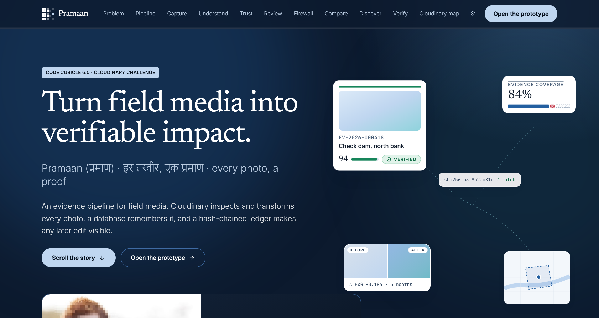
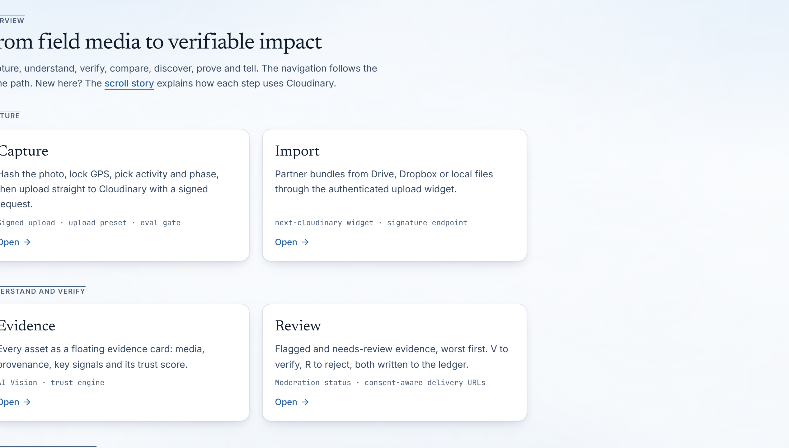
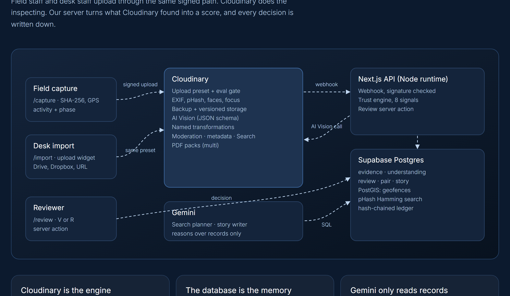
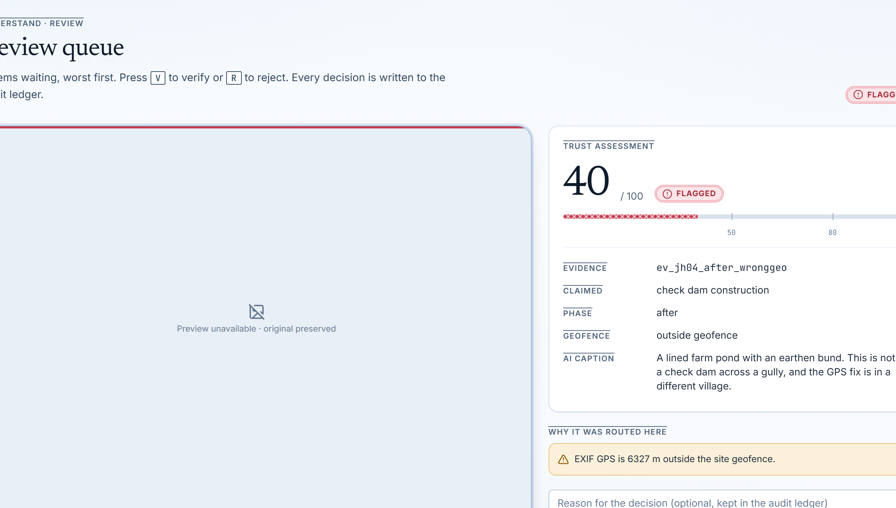
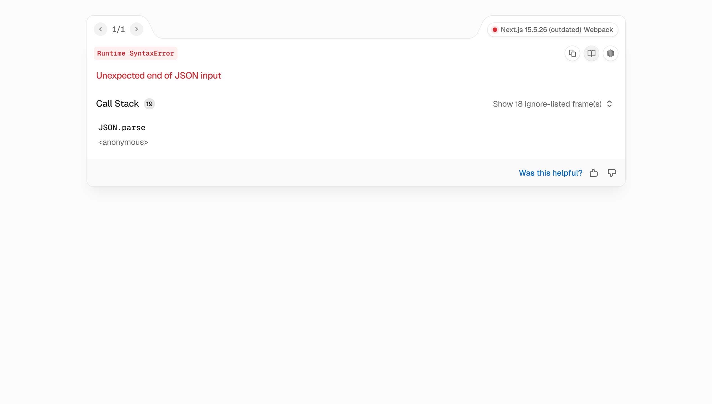
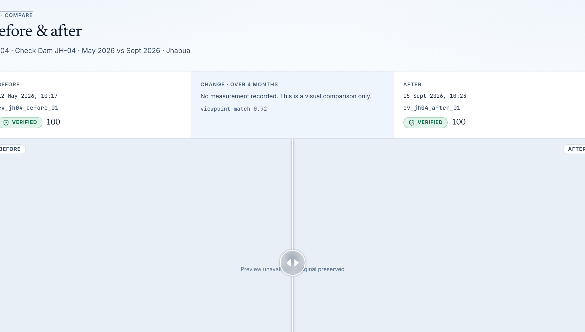
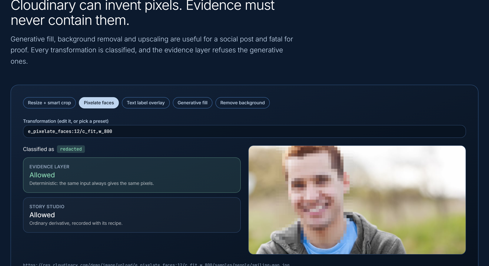
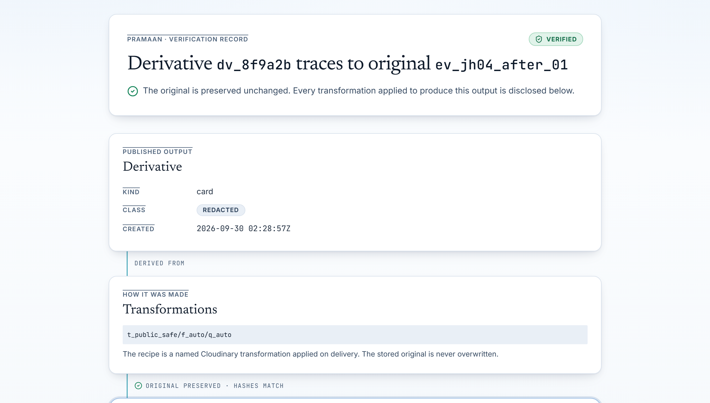

An end-to-end evidence pipeline turning unstructured field photos into cryptographic, explainable proof for CSR, climate & public infrastructure monitoring. Cloudinary inspects and transforms, Supabase enforces spatial and ledger custody, and Gemini reasons over verified records.

Over ₹35,000 Cr in annual Indian CSR and ₹1.4 lakh Cr in public rural schemes rely on field photos that anyone can restage, recycle, or rephotograph off a screen.
Field workers routinely share project photos over consumer messaging apps (WhatsApp, Telegram) that automatically compress images and strip EXIF timestamps and GPS coordinates.
Without device-level binding at capture, evidence enters donor databases in a total metadata vacuum, making temporal and spatial verification impossible.
When India made geotagged photos mandatory for MGNREGS, ₹2,600 Cr in fake wage claims were uncovered in Rajasthan in 7 months (Nov 2024–Jun 2025).
Fraud quickly adapted: operators photographed laptop screens showing old work to forge fresh GPS timestamps. By July 2025, MoRD ordered emergency manual checks.
Companies Act Rule 8(3) mandates independent third-party impact assessments for large CSR outlays, yet assessors receive unlinked photo dumps with zero verifiable provenance.
Simultaneously, India's DPDP Act imposes severe penalties for non-consensual biometric and beneficiary image publishing, exposing organizations to dual compliance failure.
Pramaan provides an unbroken chain of custody, ensuring that only verified, in-geofence, non-synthetic media enters institutional impact reports.
Field capture client locks device GPS and computes SHA-256 before direct signed upload. Cloudinary intake eval gate rejects corrupted or oversized files before incurring storage costs.
Cloudinary extracts EXIF metadata, computes 64-bit perceptual hash (pHash), identifies faces for privacy redaction, and executes AI Vision with structured JSON schemas to confirm activity claims.
Scores evidence 0 to 100 with clear weights. Dual hard caps isolate duplicate photos (pHash ≤ 4 bits), screen recaptures, and out-of-geofence submissions directly into a human review queue.
Every review, derivative, and report citation is committed to a SHA-256 hash-chained ledger. External auditors scan public QR codes to verify complete transformation recipes back to raw source.

Cloudinary inspects and transforms media; Supabase enforces spatial boundaries and cryptographic ledger custody; Gemini reasons strictly over structured records.

Direct signed uploads enforce preset configurations. Cloudinary performs pre-storage eval validation, computes 64-bit pHash, parses EXIF geolocation, runs AI Vision with structured JSON output, and serves deterministic derived assets.
Executes spatial containment checks (check_site_geofence) with 150m buffer. Performs bitwise Hamming distance candidate matching (match_phash_candidates) and appends cryptographic SHA-256 ledger entries.
Multi-agent investigation pipeline (understand, organize, analyze, compare, discover, report) strictly reasons over verified database rows. Human-in-the-loop checkpoints prevent unreviewed media from reaching synthesis.
Reviewers inspect flagged media with transparent signal breakdowns, impact claims reflect verified evidence, and temporal change is proven through baseline alignment.

Evidence ev_jh04_after_wronggeo flagged with Trust Score 40. Alert: "EXIF GPS is 6,327 m outside site geofence." Keyboard hotkeys V and R write decisions directly to audit ledger.

Claims scored solely against verified proof. Check dam construction: Strong (5/5, 100%). Water retention: Moderate (4/6, 67%). Vegetation: Gap (2/6, 33%). Flagged photos are mathematically excluded from impact metrics.

Interactive comparison locks baseline dry gully (May 2026) against completed post-monsoon check dam (Sep 2026) from identical surveyed vantage points. Proves physical structure and water impoundment over time.
Pramaan enforces strict architectural boundaries so AI models provide high-level reasoning without ever contaminating the underlying evidence layer.
Every transformation classified as transcoded, redacted, edited, or ai_generated. assertGenerativeFirewall() throws on e_gen_*, b_gen_fill, or upscaling. Synthetic pixels are strictly banned from evidence.
PostGIS calculates spatial distance to polygonal site boundaries; >150 m triggers a hard flag cap (Score 40). Bitwise popcount pHash matching in SQL identifies reused media (≤4 bits Hamming) across previous projects, even after cropping or compression.
Multi-agent investigation graph (understand, organize, analyze, identify, compare, synthesize, discover, report). Flagged evidence halts execution at human-in-the-loop checkpoints. Uncited claims are pruned; search loops capped at 3.

Every technical decision in Pramaan is engineered to survive independent auditor scrutiny, corporate ESG audits, and regulatory inspection.
8 weighted signals (P1-P3, I1-I3, R1, Q1) produce a transparent 0-100 score. Hard cap (Score 40) on duplicate photos or geofence breaches. No-GPS cap (Score 79) prevents unverified claims.
While generic platforms blur the line between AI creation and reality, Pramaan isolates generative tools strictly to Story Studio with visible 'AI-assisted' badges. Evidence layer rejects synthetic pixels.
Every action (ingest, review, derivative, report) is linked using SHA-256: entry_hash = sha256(prevHash + event + subject + payload + time). Retroactive modification breaks the chain visibly.
Auditors scan a QR code on any published impact report to inspect the transformation recipe, SHA-256 hashes, parent evidence ID, and ledger audit history back to raw capture.

Benchmarked against real test cases from the JalSetu Foundation Check Dam JH-04 dataset, detecting 100% of synthetic, recycled, and location-spoofed assets.
• End-to-end evidence pipeline: Capture → Cloudinary AI → PostGIS → Gemini.
• 8-signal explainable Trust Engine with dual hard caps.
• Generative Firewall blocking synthetic media from evidence.
• LangGraph 6-agent workflow with HITL and cited reports.
• Cryptographic SHA-256 audit ledger and public QR lineage.
• Offline-first PWA background sync (IndexedDB) for zero-connectivity field sites.
• Hardware-backed C2PA cryptographic signature embedding (fl_c2pa).
• Enterprise multi-organisation tenant isolation with fine-grained RLS.